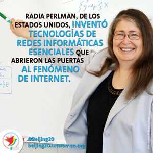

NACIMIENTO
RADIA JOY PERLMAN nació el 18 de diciembre de 1951 en Portsmouth, Virginia. Su padre y su madre eran ingenieros que trabajaban para el gobierno de los Estados Unidos. Él en radares y ella como programadora de ordenadores.
Radia pasó gran parte de su infancia cerca de la ciudad costera de Asbury Park (New Jersey), donde la familia se mudó debido al trabajo de la madre. En la escuela Radia se sintió fascinada por las clases de matemáticas y de ciencias, aunque también le gustaba escribir, componer música y el arte. Tocaba el piano y la trompa. Otras asignaturas como la historia, la geografía, la literatura o la gramática no eran tan de su agrado, sin embargo, eso no evitó que igualmente obtuviese siempre sobresalientes, aunque fuera a costa de aprenderse de memoria todas las lecciones.
CARRERA
Se dedicó a diseñar el encaminamiento para la red de DEC, que Radia confesaría más tarde había sido "el trabajo perfecto en el lugar perfecto y en el tiempo perfecto". Perlman proporcionó rápidamente a DEC la que la compañía buscaba: el Spanning Tree Protocol (STP), protocolo de red de capa 2 del modelo OSI, que posibilitaba que una red entregase datos con fiabilidad mediante enlaces redundantes en las redes de área local. De esta forma se aseguraba siempre un camino activo entre cualquier par de nodos. Antes de que existiera la web, que conecta distintas redes, los dispositivos sólo podían interconectarse en una red de área local. No existía un protocolo que posibilitara que una ethernet se comunicara con otra sin que la conexión colapsara por exceso de datos. El Protocolo Spanning-Tree de Perlman permitió, y permite aun hoy en día, que los puentes y conmutadores que, a diferentes niveles, interconectan los segmentos de una red de datos, activen y desactiven automáticamente los enlaces de conexión. Se crea de esta forma una ruta única libre de bucles entre cualquier par de nodos de red, así como caminos alternativos por si uno de los elementos de red falla.

DATOS CURIOSO
SI quieres saber mas de ella, dale clik en la imagen para ver un video de perlm
A Radia no le gusta que la denominen 'la madre de internet' puesto que reconoce que ha habido muchas personas que han contribuido en el proceso, como por ejemplo Tim Berners-Lee, el inventor de la World Wide Web. Radia Perlman es una peculiar informática que desconfía de los ordenadores, evita las redes sociales, huye de los smartphones y que además toca el piano, es capaz de subirse a un escenario para hacer un monólogo humorístico y escribe poemas como su famosa "algorrima", que aparece en su artículo "An Algorithm for Distributed Computation of a Spanning Tree in an Extended LAN":